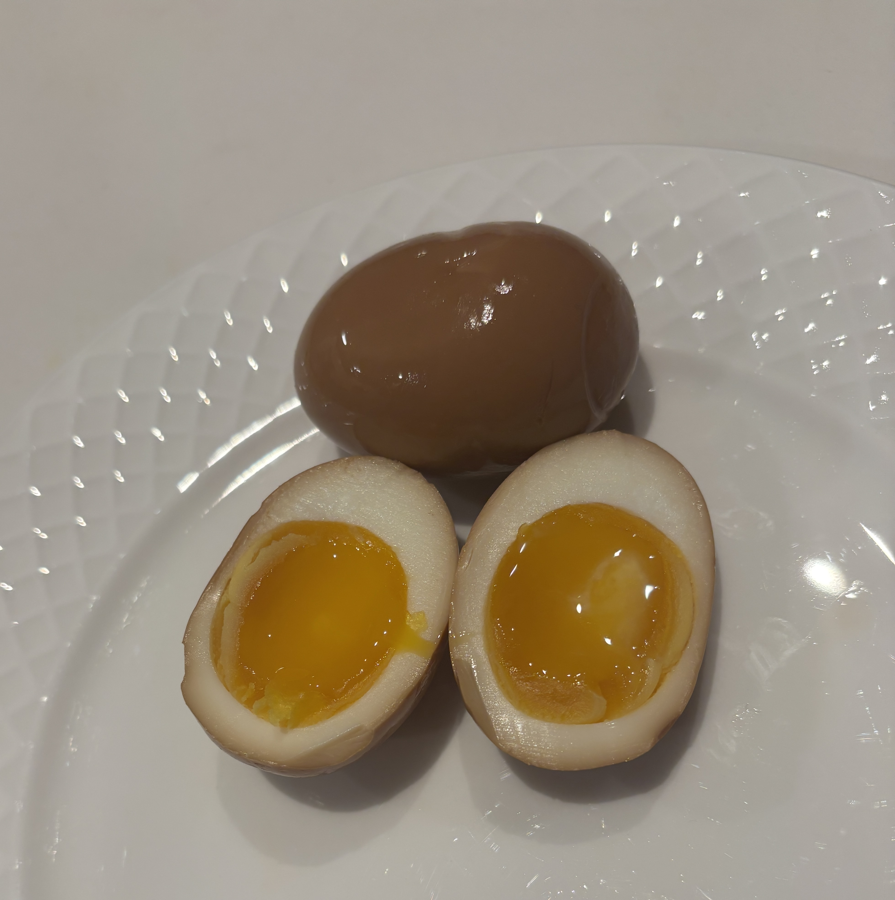

Home
Ramen Eggs

Ingredients
- 2 eggs
- 3 1/2 tablespoons soy sauce
- 6 1/2 tablespoons white cooking wine
- 2 tablespoons sugar
- 1 table spoon vinegar
Steps
- Bring a pot of water to a rolling boil on med-high heat. Lower the eggs in and cook for 7 minutes.
- While the eggs are boiling fill a bowl with ice and cold water. After the eggs have finished boiling immediately place the eggs in the ice bath.
- Once the eggs are cool enough, peel the eggs.
- In a bowl, mix the soy sauce, cooking wine, sugar, and vinegar.
- Pour the mixture and place the eggs in a ziplock bag removing the air from it.
- Leave the eggs soaking in the marinade for 12-24 hours in the fridge.
- Put the eggs in an air tight container in the fridge after marinating. Eat within 2-3 days.